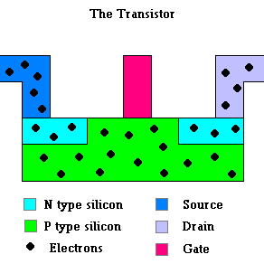
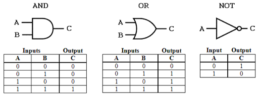

Reading Overview
In this chapter, we focus on the tangible components of any computer system: hardware. It is very unlikely that any of you will make a career in microchip design. However, we are in the midst of a continuing digital revolution. Digital computers impact every facet of our life. In fact, you spend far more time with a computer than you do with your significant other or your own family! Understanding the basics of how digital computers work is as important today as being able to read and write. Nobody would argue against the value of knowing English grammar, or basic math. By the same token, I hope you understand the importance of knowing foundational IT concepts. A basic understanding of computer hardware is part of having a cultural foundation to navigate the world around you, like knowing that Italy is in Europe and that you put unleaded gasoline in your car because it has an internal combustion engine …. unless you have an electric car. Then you don’t have to worry about gasoline... but I digress....
Specifically, this chapter will help you to:
- Understand the basic representation model that computers use.
- Understand the link between Moore’s Law and CPU performance.
- Be able to describe the “von Neumann architecture” and be able to speak intelligently about the design of general-purpose computing machines.
- Understand and be able to describe the stored program concept.
- Be able to comprehend and use the appropriate technical terminology when talking about computer hardware.
Introduction
In earlier chapters, we introduced Moore’s Law and we discussed its importance in underlying those trends that over the last thirty years have revolutionized the computer industry and our lives. As you recall, the law states that the number of transistors etched on an integrated circuit (i.e., a microchip) doubles every one to two years. We discussed the effects of Moore’s Law: increase in processing power and memory, declining cost of computing and, consequentially, the pervasiveness of easy to use computing devices that are now embedded in so many aspects of our daily life. But how does Moore’s Law work? What is the relationships between transistors and computing power? And what is “computing power” anyway?
This chapter is devoted to answering these questions. We start by covering a few basic concepts that explain how a digital computer represents data and instructions, and how these data and instructions are processed.
The video below captures 40 years in the evolution of computer videogame graphics. It is perhaps the best "visualization" of "computing power" at work.
The Digital Revolution
If you have just recently passed your teens, you are a so-called “digital native.” Author Mark Prensky provided the early definition of digital natives as those individuals who are “native speakers of the digital language of computers, video games and the Internet1.” More generally a digital native is a person who grew up after the widespread adoption of the Internet in the 1990s. The implication is that, having been raised in a world dominated by digital technology, these individuals are familiar with computers and the Internet from an early age. Of course, in any subject matter there is a fundamental difference between familiarity and mastery, and many digital natives are not at all proficient in their use of digital technology. Yet, a digital native will generally turn to a digital resource (i.e., Google search) before a physical resource (i.e., a library search) for her information needs. As an aside, note that the expectation is that digital natives are well versed in their use of digital computers, this is another good reason to learn as much as you can from this class!
The term digital is pervasive in modern parlance. Here is a small sample of definitions from the Oxford English Dictionary:2
- Digital economy: “an economy which functions primarily by means of digital technology, esp. electronic transactions made using the Internet.”
- Digital money: “money represented and held in a digital form which can be transferred electronically from one party to another.”
- Digital art: “art created or modified using a computer or other digital medium.”
- Digital divide: “the gulf between those who have ready access to current digital technology (esp. computers and the Internet) and those who do not.”
- Digital highway: “a route or network for the high-speed transfer of information.”
- Digital footprint: “a trace or the traces of a person's online activity which can be recovered by electronic means.”
Digital Signal Processing
But what is this “digital” everyone is talking about? Can you provide a clear and concise definition of the term? The word derives from the Latin digitus which means finger. That’s why the muscle that allows you to bend your fingers is called the flexor digitorum profundus, and not the flexor fingerorum profundus.
Since the fifteenth century the terms has also referred to: “a whole number less than ten." As you know, the numerals we use for computations [0 - 9] are called digits – perhaps because our fingers were the first computation devices we ever had.
The Merriam-Webster dictionary provides a definition that captures the modern use of the term digital as “relating to, or using calculation by numerical methods or by discrete units.” The key term here is discrete units. Discrete means individually separate and distinct. It is the opposite of continuous. As if you were to count with your fingers, using a digital system to represent information implies the use of discrete values, as opposed to continuous units.
To understand this point, consider music. You are very familiar with various forms of digital music. You may still own some music on Compact Disc (CD) and you certainly own an MP3 or streaming music player. Most likely your music player is in the form of the music app loaded on your smartphone, not its own separate physical device. Digital music is music that is stored on your device as digital signals. Following the definition of digital, a digital signal is a codified message represented as a sequence of discrete values. I was a music loving youngster in the days before digital music. I distinctly remember the advent of the MP3 format and the first music sharing site, Napster in 1999. Do you know how music was stored and played in those days? Vinyl records and compact cassettes where the devices we used, and music was stored and reproduced by analogue signal. An analog signal is a codified message represented as a continuous time varying variable that changes as a function of the quantity it encodes. As the term implies, the codified signal is an analogue of the source signal.
We don’t have to get too technical here. However, it is important for you to realize that in an analog music recording, some physical property of the recording medium will vary in a manner that is analogous to the variation in air pressure produced by the sound waves of the original sound to be recorded – as captured by a microphone. In a vinyl record, the physical characteristics that is analogous to the sound is the grove cut in the surface of the record. In vinyl records, the deviation of the groove from a smooth cut is proportional to the recorded sound. In a compact tape cassette, the physical characteristic that is analogous to the sound is the magnetization of particles on the tape. The strength of the magnetization is proportional to the recorded sound.
Conversely, a digital recording works by converting the physical properties of the original sound into a sequence of numbers (i.e., digits). Those digits can be stored on any suitable medium. This is why you could have digital music stored on a cassette tape or, in theory, even on a vinyl record. The fundamental difference however is that the data are not stored as a time varying analogue quantity to the recorded sound. Instead, they are stored as a string of digits. No property of the digital music recording is proportional to the original sound.
The first step in creating digital music is similar to the one described above. A microphone will translate variation in air pressure produced by the sound waves into electrical signals. However, instead of trying to store these signals with some analogue physical quantity (e.g., groove deviation, magnetization), the electrical signal is converted into a sequence of numbers using an analog-to-digital converter.
Analog to digital conversion is a fascinating process. For our purpose suffices to say that there are two steps:
- Sampling: The process of converting a continuous sound wave into a discrete signal by taking a number of measurements (samples) for each second of music. Sample rate is the unit of measure used for sampling. Typically, music is sampled at 44,100 samples per second (expressed as 44.1 kHz).
- Quantization: The process of approximating the actual sample value to a discrete set of values. This is necessary to be able to express all continuous values in the analog signal using a limited set of digital values. Bit rate is the unit of measure used for quantization.
When music is digitized, the data that makes up a song can be much more easily manipulated, for example with Auto-Tune or other effects (click here for a fascinating history of Auto-Tune). You intuitively realize that higher sample rates and higher bit rates will result in higher fidelity reproductions of the music and larger files. In the earlier image about Napster, if you paid close attention, you could see two columns labeled Freq and Bitrate. It should not surprise you to see the file size of the songs increase when these two values go up. If at this stage it is not clear why, the discussion below will explain.
In the early days of digital music, less than two decades ago, many of us had to convert their existing music libraries into digital music. The reason was that a tape, a vinyl record or a CD would contain tens of songs. The very first iPod stored 1,000 songs!
If you have time watch this video, it is the launch of the first iPod.
The comparison between analog and digital is most immediately understood in the context of music, but the move to digital is all around you. Digital pictures sample and quantize light to create a numeric (i.e., digital) representation of the shapes and colors in the picture. Digital video works much the same way, but the images, called frames, are packed together to fool your eyes into believing that smooth motion is occurring. If you are getting this, you will immediately realize that the smoother the video, the more frames it has, and the more frames in the video the larger the file size.
It is legitimate to ask yourself, why so many analog devices are being supplanted by digital ones? What makes “digital” better? There are many advantages, but here is a list of the major ones:
- Resilience: Data stored in digital form is generally more resilient. Think about music again. A vinyl record is played by having a physical needle move within a physical groove in a plastic disk. Every time the record is played the groove is consumed ever so slightly, and some of the “data” are thus lost.
- No reproduction errors: Digital data are perfectly reproduced every single time. Think of a song again. Once the data has been encoded numerically, it can be reproduced perfectly, with no error, every single time.
- Versatility: Analogue data require specialized equipment to be manipulated and reproduced. Conversely, digital data can be accessed and used by any digital device - provided of course that it has the right software to read the data. This is the reason why you need a specialized device, such as the Walkman, to listen to tape cassettes. Conversely, your MP3 music player can be an app that resides on any one of your computers – your smartphone, your laptop, your smartwatch.
Digital data can be manipulated by digital computers – which are of course a kind of digital electronics. We defined digital electronics as equipment and components that manipulate digital signals. As we will see later, manipulation of digital data is done through software, not through a physical device. That’s why your laptop can be a radio, a music player, a TV, a communication device to send and receive letters (i.e., email), a calculator and a gaming device and almost anything else you can imagine.
"Software is eating the world," and this video is the best visual representation of this statement!
Ok, so, any digital signal can be processed, stored and transmitted by any digital computer with the proper software. But why is that? To understand this last piece of the puzzle we have to discuss the binary systems and the advent of transistors… yes, back to Moore’s Law.
The Binary System
In a modern digital computer, the specific digital system used to represent signals, data, and computations is the binary system. You are certainly more familiar with the decimal system. Both the binary and decimal systems are positional numeral systems. Positional numeral systems represent values using an ordered set of digits. Each digit can take a limited set of symbols. The number’s value is determined by the combination of the symbol and its position. In the decimal system, we use ten symbols – [0, 1, 2, 3, 4, 5, 6, 7, 8, 9]. The binary system uses only two symbols – [0, 1]. The decimal system is also called “base 10” while the binary system is called “base 2.”
That the two systems are equivalent is easily demonstrated by converting from one to the other. This is something you surely did in high school, while you may have forgotten how to do it, it will immediately come back to you if you try. A number in the binary system will have a value determined by the position of its digits and whether that digit assumes a value of zero or one.
The binary system is the abstraction at the heart of digital computers. It’s application to storing and communicating data was first conceptualized by a 32-year-old researcher named Claude Shannon in 1948. In the paper describing his theory Shannon proposed to use the term bit, short for BInary digiT, as the smallest unit for measuring information. A bit can only have two states, generally represented as 0 or 1. Intuitively you recognize that combining bits together would allow us to represent more and more data.
This is all a bit abstract, but you can make it real very quickly. Say I gave you a lantern to communicate with me at a distance into the night. Could we create a “code” to make sure you could communicate with me? How much information could you communicate? Well, we could agree that “lantern on at midnight” means one thing (e.g., I’m happy) and “lantern off at midnight means another thing” (e.g., I’m hungry). We synchronize our watches and we have a way to communicate. Sounds silly? Well, Paul Revere apparently devised a system with two lanterns to signal when the British army would march from Boston on April 18, 1775 and which of two routes they would take.
It would of course be impractical to have to agree a priory on the meaning of each bit. In modern computing this problem is easily solved. Each bit carries only one unit of information – the presence of absence of a signal – a zero and one. Thus, one bit can store two pieces of data. With two bits we can store four pieces of information. With eight bits, called a byte, we can store 256 pieces of data.

As a testament to the importance of computing, the bit has joined the meter, the gram, the liter, and the minute as a determinate quantity — a fundamental unit of measure that enables modern life. I know, in the USA you use the inch, the pound and other funny units of measure nobody else in the world still employs… but my point stands. For data, we use the standard, however there are multiples conventions accepted for other units of measure (see table). Interestingly however, the bit is atomic, you can’t split it. Unlike time, which is continuous, digital data are by definition discrete. Thus, you can’t have a millibit or microbit – those terms are as nonsensical as they sound.
Just like you can perform mathematical operations (i.e., addition, subtraction,
multiplication, division) using the very familiar base 10 numeric system, you
can do so with the binary system (base 2). For humans, base 2 is a bit more
cumbersome than base 10. But for a digital computer base 2 is quite natural.
Ironically, humans use a very cumbersome numbering system to measure something
as important as time – we use a base 60 system! This is another area where we
don’t need to get too technical. There are great resources for you to use if
you want to better understand how binary computations are performed.
Creating the binary system as the abstraction necessary to store data and perform computation was a breaktrhough in computing. But it is only half the battle to create a working digital comptuer. In order for a machine to do the work for us, we need a physical device that can represent a binary numeric system. With such device, you could then get a machine to perform these computations: enter the transistor!
The Transistor
Early electronic computers, such as the ENIAC and the LEO, used vacuum tubes as the core elements of computations and data storage.
In parallel to the development of these early computers, the transistor was becomina a reality at Bell Labs (1947). Transistors are current regulators made of three layers of semiconductor material. A semiconductor is an interesting material. It behaves like an electricity conductor in some circumstances. Under other circumstances, it behaves like an insulator. Most metals (e.g., copper, gold) are good conductors, and they let electrical current flow freely through them. Most non-metallic solid material (e.g., wood, plastic) are good insulators, showing extremely high resistance to the flow of electrical charges within them.
Semiconducting material are quite unique in that they can go both ways, showing properties of conductors and insulators depending on the circumstances. It is beyond the scope of this chapter to provide an in-depth explanation of the properties of semiconductors. You can find quite a bit of information here from Intel6 – the largest chip maker in the world.
The most popular semiconductor material in the computing industry is silicon, which is plentiful in nature. In fact, silicon is the main element you find in regular sand and one of the most common elements of the earth’s crust. But how do you go from sand to personal computers? How is sand going to help us create autonomous cars that drive by themselves and reduce the number of fatalities on the road? The transistor is the device at the heart of Moore’s Law, and silicon is the key semiconductor material for making transistors. A transistor is a semiconductor device that can switch electronic signals and electrical power.

A modern transistor is built combining two opposite charged semiconductor materials. The resulting device acts like an electronic switch. When the base is charged, current will flow from the collector to the emitter. The switch is in the ON position. When the base (or gate) is not charged current will not flow from the collector to the emitter. The switch is in the OFF position. One very important thing to note is that this “switch” has no moving or mechanical parts of any kind. Electricity is all that is needed to make it work. Thus, the speed at which it can be opened/closed is the speed of electrical impulses.
When transistors were first invented they were assembled by hand.
But thanks to the progress described by Moore’s Law, they have been shrinking in size to subatomic levels. A modern transistor measures in size on a nanometers scale (that’s 10-9 or 0.000000001 meters). Just to give you a reference, the diameter of your hair is probably around 80 micrometers. That means that you can fit about 4,000 transistors on it – give or take a few. On a modern graphic card, the type used in your laptop or gaming device, you will easily find 12-18 billion transistors.
Reducing the size of transistors has many advantages. They can be closer together, thus reducing the time for electronic signals to travel from one transistor to another. Smaller transistors also consume less power. At this point you are probably beginning to see the relationship between Moore’s Law (doubling transistors on a chip) and the miniaturization trend (smaller computing devices increasingly available to the public).
More importantly, transistors can hold a charge with almost no power consumption. As the transistor is charged, it can open or close a switch. In other words, it can control an electronic gate for the flow of electrical current. Thus, a transistor is a two-state device, open-closed (charged-not charged). Are you starting to see the magic? Given their ability to maintain their ON/OFF state, transistors are the physical devices we can use to implement the binary system inside digital electronic devices. The fact that they are microscopic enables us to link billions of them into integrated circuits.
Transistors + Binary Circuit = Integrated Circuitry
At this point all the pieces are in place for you to understand how simple, yet brilliant, the advent of the digital computer was. Using electronic devices that could process electrical impulses (normally a positive or negative charge), the binary system could be physically implemented in machines that could perform computations and carry out instructions. As we already know the binary system is the logical abstraction to bridge the gap between humans and machines. The transistor is the physical device that implements the abstraction.
Logic Gates
We have one last problem. A transistor can only take two states, ON/OFF. So, a transistor is perfect for storing the value of one bit. But how can you perform computations and carry out instructions? Without getting too technical, the solution is to combine transistors into logic gates and then use these logic gates as the building blocks of integrated circuits. We will provide a simple example, so that you understand the concept, but if you want to dig deeper into this here is a good start.
The simplest context in which to demonstrate how logic gates work is to implement some Boolean algebra with transistors. You surely have experience with Boolean algebra, but you may have forgotten it. Here is a small refresher. Boolean algebra is the branch of mathematics in which the values of the variables can only be expressed as TRUE and FALSE, usually denoted as 1 and 0 respectively. The basic operations of Boolean algebra are AND, OR and NOT. The results of each one is expressed with truth tables. Given two inputs, the result of an AND operation is TRUE (that is a 1) only when both inputs are TRUE. The result of an OR operation will be TRUE when at least one of the inputs is TRUE. The result of a NOT operation is the opposite of the input. Given TRUE, the NOT operation returns FALSE – like that annoying friend who is always playing devil’s advocate with you.

A logic gate is an electronic device that implements Boolean logic and binary math into physical components. The logic gates used in a modern digital computer are built by combining transistors. Here is the simplest example: creating an AND gate using two transistors. Remember how a transistor works. If the transistor is placed between a source electricity and an output it will act like a closed switch, no current will be allowed to flow through. However, when the base of the transistor is charged, the switch opens and current flows through to the output. Just putting two transistors in a sequence where the output of the first one becomes the input of the second, will implement an AND gate. If the base of neither transistor is charged, this is equivalent to inputs being set to 0. The AND should output 0, and in fact current will not flow through the first transistor. Charging the base of only one of the transistor will open it, but the other will be still closed and current will not flow through to the output. Only when the base of both transistors is charged, equivalent to setting both inputs to 1 (or TRUE) in a Boolean AND operation, current will flow through both the transistors. Thus, the output of the circuit is a 1 only when both inputs are set to 1. We have implemented a concept, the logical AND operator, in a physical circuit. We can now use electrical impulses to carry out logical operations… like magic!
Well, guess what happens next? You probably already figured it out, if you combine transistors into logic gates to perform simple operations, the next stage is combining logic gates into more complex electronic devices that perform more complex operations. That’s exactly what happens, those “more complex devices” are called integrated circuits.
Integrated Circuits
It is important for you to visualize how, even just a small combination of carefully placed basic logic gates, can perform operations. Take time to watch this video. It shows how your computer adds two small numbers.
That’s it, this is the magic of computers. By using binary logic as the abstraction and increasingly complex combinations of transistors, a computer can use electrical impulses to perform computations. We have only shown how to add two small numbers. But all you have to imagine is increasingly complex combination of circuitry to perform other specialized basic operations. Once you have the basic operations you can combine them to make complex software programs. You can think of these basic operations like notes in music. The notes are only seven, or 12 if you include all the tones. Yet, in the hands of talented musicians (e.g., Chopin) those few notes become beautiful music (e.g., Piano Sonata No. 2). In modern computing, integrated circuits are combinations of electronic circuits etched onto a silicon chip. They are generally called chips or microchips. Modern integrated circuits typically combine millions of logic gates (and billions of transistors). A microprocessor is an integrated circuit that contains all the functions of the central processing unit of a computer.
Modern Computers: The von Neumann Architecture
One of the effects of Moore’s Law has been the drastically decreasing cost per unit of computing power and the miniaturization of increasingly powerful integrated circuits – that’s of course what happens when you can pack more transistors on the same area of a microchip. As a consequence, we have seen the pervasive adoption of digital computers – more than half of all humans on the planet at the time of this writing have access to a smartphone and the Internet! More subtly we have seen computing capability becoming embedded in an ever-increasing variety of objects.
With the dizzying pace of innovation in the IT industry, you may be surprised to find out that the basic structure of a digital computer was introduced over sixty years ago. More importantly, it has not changed since! Many people contributed to the development of the science and technology breakthroughs underpinning the evolution of digital computers – most notably perhaps British mathematician Alan Turing. It was John von Neumann who articulated the basic structure of such a computer in 1946. In a report for the United States Army Ordinance Department, von Neumann describes in detail the design of a "very high-speed automatic digital computing system." He identifies five components that would be necessary to enable the device to perform computations and to ultimately process instructions to turn input into output. Those components, and their relationship, are now called the von Neumann Architecture.
The first tangible implementation of this design was the ENIAC at the University of Pennsylvania. Being a war-time effort funded by the military, the computations the machine was expected to perform were ballistic calculations for projectiles. But the design was general enough that the computer would complete any program it was instructed to run, as long as those programs used a pre-specified set of instructions.
The logical design of a digital computer requires the following five major components:
- Central Processing Unit: The Central Processing Unit, generally abbreviated CPU, is the electronic circuitry that performs the basic operations in a digital computer system. The CPU has two logical components. The Arithmetic Logic Unit (ALU), which is the circuitry devoted to processing basic arithmetic and logical operations. And the Control Unit (CU), which is the circuitry devoted to processing input/output and control operations.
- Primary storage: Primary storage, sometimes called main memory or internal memory, is the short-term data storage element of a digital computer that is directly accessible by the CPU. Primary storage is volatile, all its content is lost when the computer is powered off.
- Secondary storage: Secondary storage, sometimes called external memory, differs from primary storage in that it is not directly accessible by the CPU. Secondary storage’s is the long-term memory element of a computer system. For this reason, unlike primary storage, it is non-volatile. That is, secondary storage holds data even when the computer is powered off.
- Input devices: Input devices are the hardware interfaces between the external environment and the CPU. They enable control signals and data to be transferred from the environment to the computer system.
- Output devices: Output devices are the hardware interfaces between the CPU and the external environment. They enable the result of CPU computations and data to be transferred from the computer system to the environment.
It is important for you to be able to identify and describe the above five components of a modern computer. It is also important for you to be able to articulate precisely what each one does. But it is most important for you to understand what is their role in making the computer work. If you are reading attentively you will have noticed that the five components introduced above represent a logical design.
This is a term we will use many times in this course and it is not to be confused with physical design. To understand the difference just think about your own computer system. By now you do know the importance of backing up your data. For your laptop, therefore, you may have purchased two hard disks, an internal one that came standard, and an external one that you use to store your backups. There should be no doubt in your mind that each of those two hard disks is a secondary storage device. Thus, the computer system has access to secondary storage, it just so happens that the physical implementation of this component is in the form of two distinct devices.
Physical Elements of Modern Computer Systems
Seven decades after its original formulation, the von Neumann architecture is still the logical design of the digital computer. However, computer engineering has made great strides in this time span and the physical design of modern digital computers has evolved significantly. Thus, while the logical design of the first personal computer is the same as the logical design of your newest smartphone, their physical design is so different that most people don’t even realize the two are the same type of device at the core. The most significant change in physical design has occurred along two dimensions: a) form factors and b) number and variety of physical components.
Form Factor
In design, and particularly industrial and electronics design, the term form factor refers to the definition of size, shape and the other physical specifications of an object. The cellular phone industry has a tradition of naming the major form factors making it a great illustration of the concept.
For another example of different form factors think about how different four recent Apple devices look: Apple Watch, Apple Airpods, iPhone and the MacBook Air. Yet, each of them is a von Neumann machine – a digital computer.
The form factor of digital computers is so varied that most people don’t even know how many everyday objects are in fact computers. Arguably Tesla cars are digital computers, they certainly have all of the components of the von Neumann architecture.
Physical components
Form factor refers to the external physical characteristics of electronic devices. But the internal physical design of computers has also evolved significantly in the last few decades. The main reason for this change has been the increase in the number and variety of physical components that computer engineers have been able to create. For each of the five elements of the logical design we provide some examples. The list is not intended to be comprehensive as we just touch upon the most important devices.
Central Processing Unit: Early computers had one microprocessor, the CPU, that contained all of the circuitry necessary to perform mathematical (ALU) and control (CU) operations. The term microprocessor is still used to refer to the CPU of a general purpose digital computer. However, as the complexity of the tasks that computers are asked to perform increased over time, the optimal solution was to parallelized CPU operations by including multiple cores. Most modern microprocessors are multicore, even your smartphone has a dual- or even quad-core CPU. A core is an independent processing unit (e.g., a CPU) within a microprocessor.
Another major trend has been the development of specialized microprocessors. Specialized microprocessors perform a limited number of highly dedicated operations. At this point in your learning you should have no doubt about how this is done: Transistors are organized in dedicated circuits that perform the specific operations. These specialized microchips that have specific instruction sets optimized for carrying out limited tasks (e.g., motion sensing and analysis) are called coprocessors or Application Specific Integrated Circuits (ASIC). Apple develops its own coprocessors for the iPhone – the M-series coprocessors. The M10, designed for the iPhone 7, collects, process, and store motion sensor data even if the device is asleep.
The best example of a coprocessor is the GPU (Graphics Processing Unit). A GPU is a specialized microchip with an instruction set optimized for image processing. GPU excel at performing the same operation on many data elements very quickly. This enables them to carry out functions such as shading an area of the screen, moving a window or an icon from one part of the screen to another, or decoding compressed video frames very quickly. GPUs are critical for gaming devices, but increasingly are used in data centers because they are well suited for machine learning algorithms.
If you want to visualize the intuition behind the advantage that ASIC and specialized microprocessors provide over general purpose CPU we highly recommend that you play these slides explaining how the Google Tensor Processing Unit (TPU) works.
Primary storage: In a computer system primary storage is smaller, faster and more expensive than secondary storage. A modern computer has multiple physical elements that work together to deliver the functionalities of primary storage:
- Registers: Registers are very fast primary storage locations. They reside within the CPU and they are exclusively accessed by it. They contain the data needed by the operations being currently processed.
- Random Access Memory (RAM): RAM is the most important primary storage component of your computer. In RAM a computer loads the applications and the data that are need to be available to the CPU. RAM is also used to store all the data that has yet to be saved to long-term memory. RAM is typically volatile, meaning that if it’s not powered, all content is lost.
- Cache: Cache memory devices are very fast, but expensive, memory components. In a computer system cache is used to increase performance. You can think of it as a “staging area” for those instructions and data that are most likely to be need next by the CPU. Preloading such instruction from RAM into cache will enable the CPU to retrieve them more quickly, thus speeding up overall performance of the computer system.
Secondary storage: In a computer system secondary storage is larger, slower and cheaper than primary storage. The physical implementation of secondary storage occurs through different storage media. A storage medium (plural media) is an instrument of data storage, generally defined by the material used to record binary representations of data.
- Magnetic: Magnetic storage media, such as hard disks and storage tapes, are long term memory devices that record data by using a read/write head to magnetize the surface of the device.
- Optical: Optical storage media, such as CD ROM and DVD, are long term memory devices that record data by burning the surface of reflective material and using laser to read it. The pattern of reflective and non-reflective areas of the CD surface represents bits of data.
- Solid state: Solid state memory devices, like USB thumb drives and SD cards, differ from other storage media because they have no mechanical moving parts. For this reason, solid-state storage devices are light, they operate at the speed of electrical impulses and don’t need sealed enclosures. Thus, they are small, fast and rugged.
Input devices: Input devices are continuously evolving. Traditional input devices are the keyboard and mouse, but more and more data for the CPU is today captured by microphones, cameras and all sorts of sensors (e.g., positioning, motion, humidity, temperature, light). Your smartphone, for example, takes input from an accelerometer, a gyroscope, a compass, a barometer, a finger print scanner, an ambient light sensor, and of course a capacitive multi-touch screen.
This video shows new input devices in action: radar and digital cameras. Note how you often can hear a warning before you visually realize that anything is happening on the road.
Output devices: Output devices are the hardware interfaces between the CPU and the external environment. They enable the result of CPU computations and data to be transferred from the computer system to the environment. Traditional output devices are the screen, the printer and the speaker.
Today more and more data from CPUs is fed to actuators. An actuator is a component of a machine that controls a physical mechanism by receiving and acting upon a control signal. The Tesla Model X falcon wings represent a great example. A computer processes the input from ultrasonic sensors that measure the distance of objects near the car, and sends output to actuators mounted on two hinges. The result is a door that can dynamically adjust its opening and closing angles based on obstacles within its proximity.... did I say that Tesla vehicles are digital computers disguised as cars?
Modern Computers: The Stored Program Concept
There was a second major breakthrough idea in that 1946 report by John von Neumann: the stored program concept. As you recall, computer pioneers were focused on creating a general purpose computer. But what is a general purpose computing machine? It is a device capable of completing a variety of widely different tasks, without the need for external intervention. Humans are of course the ultimate “general purpose machine.” But in a digital computer the solution is the so called stored program concept. The idea that the machine is able to process a small set of elementary or primitive operations that can be combined to perform more complex instructions. It is the job of a human programmer to write a complete set of instructions that will enable the computer to complete the task. Today that complete set of instructions is called a software program (the subject of the next chapter).

You already know that in a digital computer the small set of primitive operations - mathematical, logical and control - are physically implemented using transistors in the form of appropriate combinations of logic gates. The last piece of this puzzle is the concept of instruction set. Chip designers combine logic gates and basic electronic circuitry into basic instructions. Taken together, these instructions are called the instruction set of the microprocessor. Without getting too technical, think of an instruction set as the complete list of basic commands that the central processing unit can execute. If a software program uses only commands from the instruction set it should be able to complete a task without any “intelligent human intervention.”
Note that choosing a specific instruction set will generate tradeoffs between cost, performance, power consumption, size and flexibility, relative to the specific tasks the processor must complete (e.g., graphics rendering). That is, operations from the instruction set can be executed directly by the microprocessor. While more complex operations require appropriate sequences of instructions from the instruction set to be completed. There is an inherent trade-off between creating a general purpose integrated circuit and a specialized one. The first one will have a larger instruction set than the second. Thus, it will be able to perform more operations directly. But given the same number of transistors on both chips, the second will have more circuits dedicated to the same small set of instructions. Therefore, it will perform more operations in the same timeframe, as compared to the more complex one.
It should be clear now why designers create coprocessors. Given a particular performance objective, if a task is specific and recurrent enough to warrant a specialized microchip, one with a very specific instruction set, designers will build it. A GPU is the best example. Graphics is a computational intensive task if performed by a general-purpose CPU. So it makes sense to create specialized processors, the GPU, with an instruction set dedicated to graphics processing. Another example is Apple. The firm started including the M-series coprocessors in the iPhone because it wanted to be able to track phone motion even when the phone was asleep. For this task it needed a highly specialized coprocessor that could gather and process motion data with minimal power consumption.
The stored program concept captures the idea that a software program, the complete list of instructions necessary to complete a task, are stored in long-term memory. When the computer is asked to perform the task (e.g., computer the trajectory of a missile, play your favorite radio station), the appropriate program is loaded into RAM. Then, one at a time, each instruction is loaded and processed by the CPU. When the task is completed, the program is unloaded from memory and the space is now free for the execution of a completely different task (e.g., write a memo in Word, watch YouTube videos). The appropriate program is loaded and the work begins anew. It should be now clear that the stored program approach enables the work of a general-purpose machine… mission accomplished!
Glossary
· Analog signal: A codified message represented as a continuous time varying variable that changes as a function of the quantity it encodes.
· Binary system: A positional base 2 numeric system. It is the digital system used to represent signals, data, and computations in modern digital computers.
· Boolean algebra: The branch of algebra in which the values of the variables can only be expressed as true and false, usually denoted as 1 and 0 respectively.
· Cache: Very fast, but expensive, memory components that are used to increase performance.
· Central Processing Unit: The electronic circuitry that performs the basic operations in a digital computer system.
· Coprocessor: Microchips that have specialized instruction sets optimized for carrying out very specific tasks (e.g., motion sensing and analysis)
· Digital signal: A codified message represented as a sequence of discrete values, as opposed to a continuous varying variable.
· Discrete units: Individually separate and distinct units. Like the set of integer numbers.
· Graphics Processing Unit: A specialized microchip with an instruction set optimized for image processing.
· Input devices: The hardware interfaces between the external environment and the computer system.
· Logic gate: An electronic device that implements Boolean logic and binary math into physical components. Modern logic gates are made by appropirately wiring together transistors.
· Magnetic memory: Long term memory devices that record data by using a read/write head to magnetize the surface of the device (e.g., hard disks and storage tapes).
· Microprocessor: An integrated circuit that contains all the functions of the central processing unit of a computer.
· Moore’s Law: The number of transistors etched on an integrated circuit (i.e., a microchip) doubles every one to two years.
· Optical memory: Long term memory devices that record data by burning the surface of reflective material and using laser to read it (e.g., CD ROMs and DVDs).
· Output devices: The hardware interfaces between the compouter system and the external environment.
· Primary storage: Also known as "main memory" or "internal memory". It is the short-term data storage element of a digital computer that is directly accessible by the CPU.
· Random Access Memory (RAM): The most important primary storage component of a computer system. It is used to store all the data that has yet to be saved to long-term memory.
· Registers: Very fast primary storage locations.
· Secondary storage: Lhe long-term memory element of a computer system, also known as "long term memory."
· Solid state: Storage devices that differ from other technologies because they have no mechanical moving parts (e.g., USB thumb drives).
· Transistors: Electrical current regulators made of three layers of semiconductor material. They can switch electronic signals and electrical power, thereby being able to take both an "on" and "off" position.